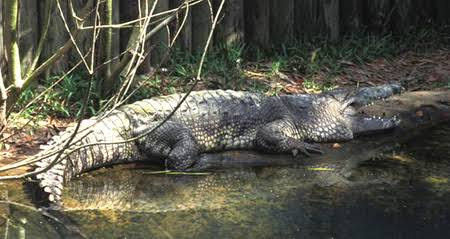
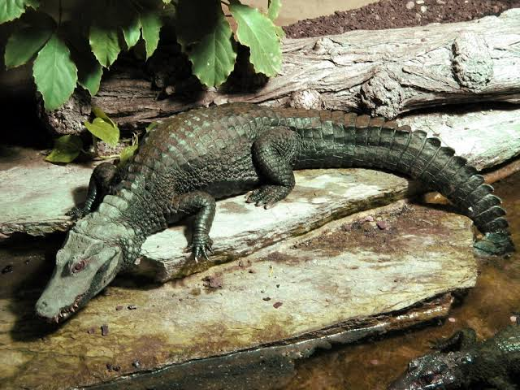
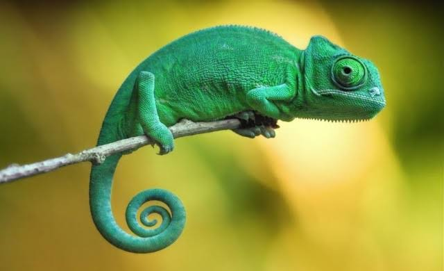
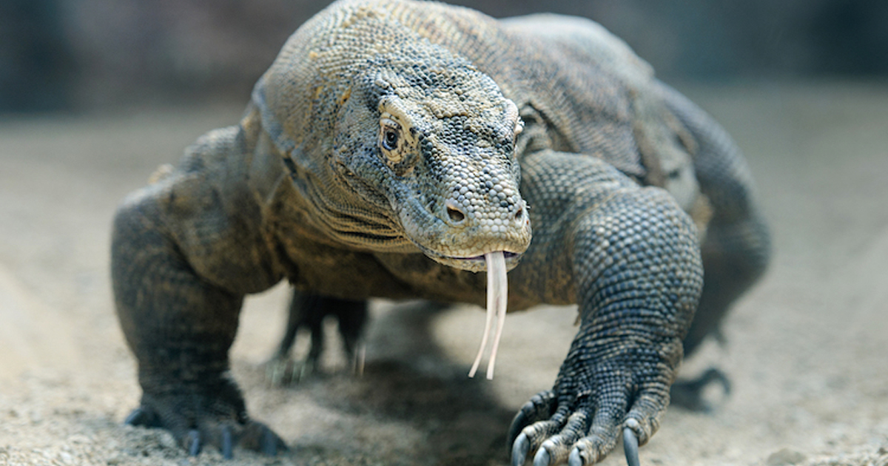
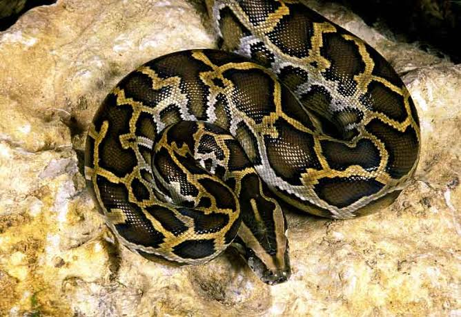

#-1: Cocodrilo del Pantano
(Crocodylus moreletii)

#-2: Caimán de Cuvier
(Paleosuchus palpebrosus)

#-3: Camaleón Común
(Chamaeleo chamaeleon)

#-4: Dragón de Komodo
(Varanus komodoensis)

#-5: Pitón de la India
(Python molurus)
